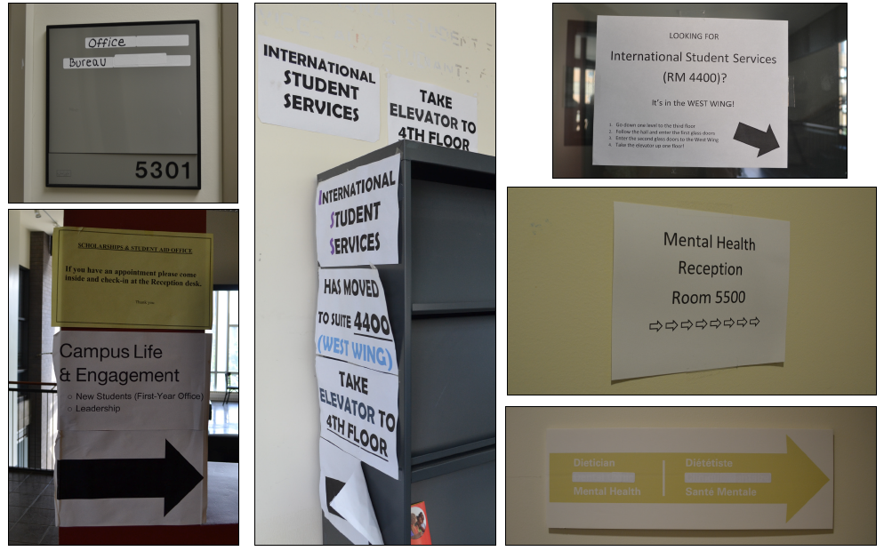
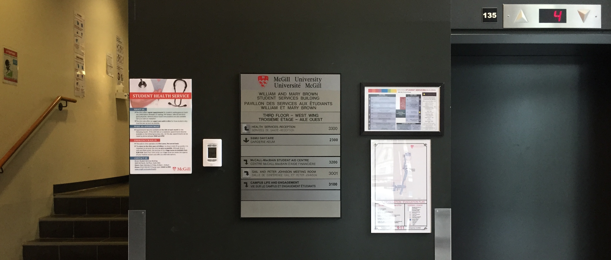
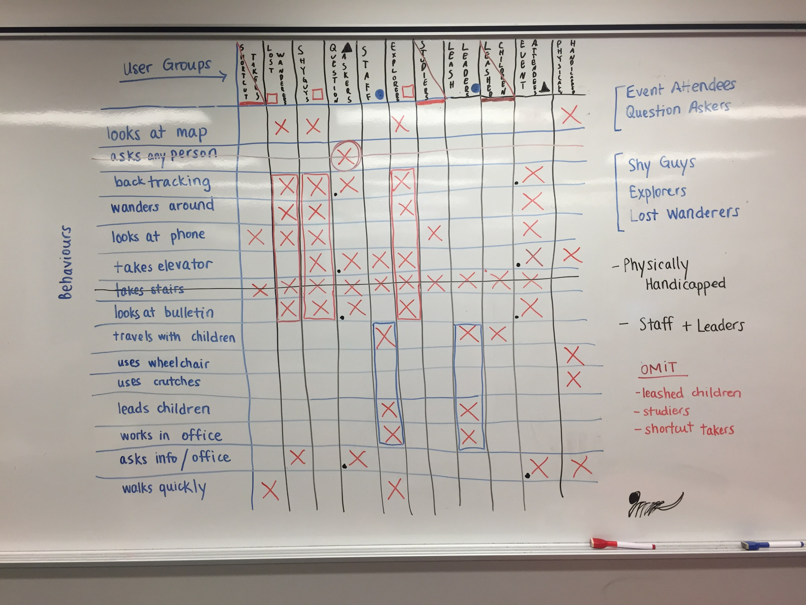
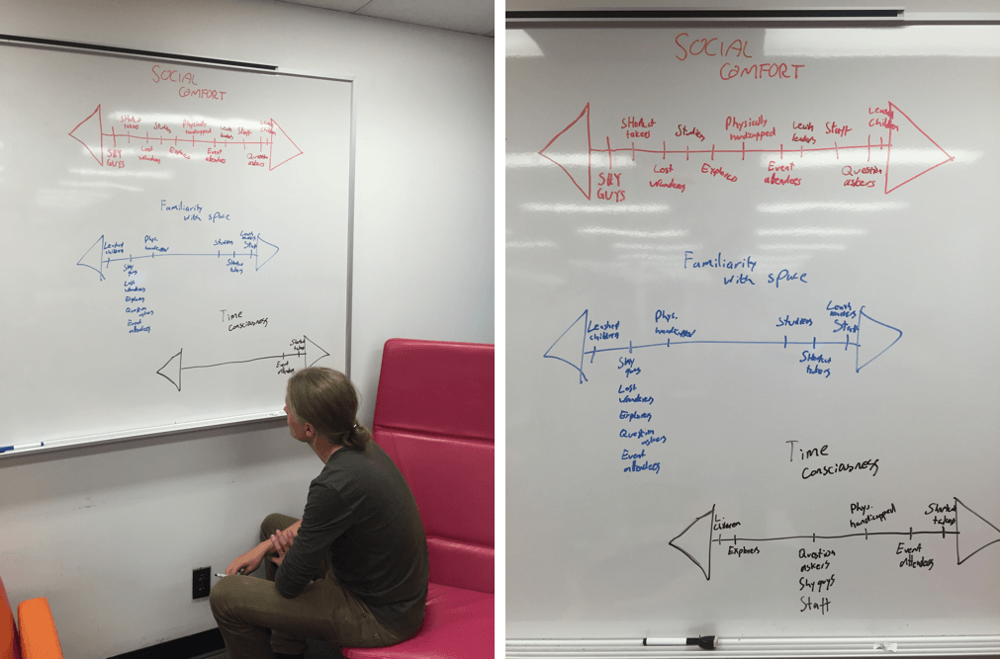
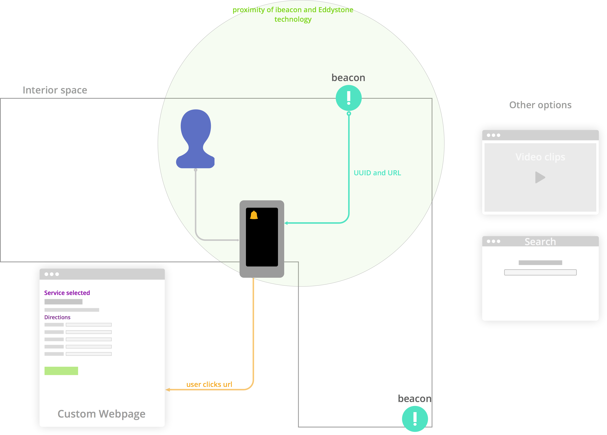

Summary of user observations
Observations were conducted in shifts between 8 a.m. and 4 p.m. on Monday, Sept. 28th. Much of the morning traffic can be attributed to McGill staff, where movement was purposeful and users were often connected to audio devices. The number of students visiting the space increased throughout the day, with the busiest period ocurring between 2:00 to 3:30 in the afternoon. Passive users of the space, such as those studying alone or reading on couches, also peaked at this time and finding a place to sit for note-taking became more difficult.
Specific examples of user behaviour
9:37 a.m. - East WingA female student entered the lobby and proceeded immediately to the information desk without looking at any maps. She asked the clerk for directions to room 4300. He was unsure whether the room would be located in the East or the West wing, and was unable to quickly find the information on his laptop. He directed her to 4th floor East, but told her to return should she remain unable to find her destination.
12:42 p.m. - West WingA female student entered the building via Docteur Penfield and proceeded slowly to the East wing, examining posters and signs on her way. She descended to the lobby and, finding a deserted information desk, examined another map. The student then traced her path back to the West wing. From there, she took the elevator to the 5th floor and found herself in the waiting area for the Eating Disorder Clinic. She wandered about while looking at her mobile device, went up a short set of stairs to 5A-West, and quietly asked one of the secretaries a question. The secretary stated that she did not know the location of the room, but directed her to the 2nd floor in the East Wing. At this point, Saige entered the elevator with the user, and asked if she was lost. She replied "No," and explained that she was attending a CAPS event, which she now knew to be located on the 2nd floor of the East wing.
3:05 p.m. - East WingA female student arrived at the lobby from the McTavish entrance while no one was at the help desk. She did not look at the building map or any signs, but went directly up the stairs. A minute later, she returned to the lobby where the clerk had since come back to his desk. She asked him for directions, then began heading up the stairs a second time before abruptly stopping to backtrack to the information desk for clarification. The clerk pointed as he repeated the directions, and the student proceeded finally to her destination.
3:28 p.m. - East WingA male student arrived at the main entrance of the building, but paused for approximately 8 seconds to examine a map in the doorway before entering the lobby. The information desk clerk was absent. The student then walked up to the 3rd floor quite slowly while taking his time to look around the space. Arriving at the landing, he proceeded down the hallway and scrutinized another set of maps beside the elevator. He quickly looked at both the Financial Aid and Campus Life and Engagement bulletin boards before retracing his route, still lost. This time, he noticed the "West Wing" connecting corridor, but consulted a nearby map again prior to passing through the large doors. Upon noting the ticketing system for the Health Clinic, he walked briskly up to the reception desk.
Problem definition
After observing users, we can conclude that many people experience trouble navigating to their destinations within buildings, despite having numerous resources available to them. These can range from signs and maps on the wall to information desks and pamphlets.
Maps are the most common tool used for navigational assistance within buildings, but they are not always good at guiding users to their destinations. They often contain all information which could be of interest, most of which is not relevant for a particular user at a specific moment in time. This can make the maps feel intimidating, so many people seem to avoid them completely – instead preferring to ask a person for directions. Others simply explore the area themselves.
Signs can be effective if the location it is indicating is nearby, otherwise their 2-dimensional nature limits their effectiveness for longer, more complex paths (see figure 1). The arrows used are not clear because it is hard to differentiate whether they are telling you to turn or change levels. Other signs simply look illegitimate, therefore causing some users to ignore them.
There is an AskMcGill Information Desk staffed with a clerk at the lobby of the Brown Building. We saw many users interacting positively with the clerk working at the desk, and after a brief interview, the two clerks whom we observed both claimed that most students will not be shy in asking for directions to one of the services. That being said, some visitors purposefully avoided speaking to the clerk. Furthermore, the Information Desk was not always staffed, which poses a problem for distraught or physically limited users seeking non-standard directions.
The Brown Building certainly has many opportunities for improved design in their current wayfinding methods. We also believe that the Brown Building is not unique in its issues, as we have experienced similar situations in other buildings on campus, such as the McLennan Library. What we observed in the Brown Building reveals an underlying problem for many interior spaces.
Key audience segments
Based on the above observations, we extracted commonly repeated user behaviours and segmented the users into a number of subsets (see figure 4). After comparing similarities between these groups and ignoring behaviours which were either too common or too specific, we consolidated certain labels into more general audience segments. Groups not engaging whatsoever in activities related to wayfinding were also ignored.
Next, we attempted to estimate where personas for each group would fall on 3 scales we assumed were functioning as determinants of user actions. These scales included (1.) social comfort, (2.) familiarity with the space, and (3.) time consciousness.
1. Independent wanderers
Defined by their autonomous tendencies, these users prefer to explore the building for themselves before asking anyone for advice. They might look at maps or building diagrams to get extra information, and they are likely to gain a relatively good understanding of the building's layout simply by moving through it. They probably will not need to look up the same information twice. These users might ask for directions if they are truly lost, but will prefer asking an employee of the building to a random stranger.
- Age: 20
- Occupation: B.Sc student, major Electrical Engineering
- Personality: logical, patient, hardworking, shy
- Physical limitations: none
- Knowledge of Brown Building: minimal
Goal: Perry is seeking the Health Services office for an appointment he made yesterday. He has visited the Brown building only once before on a campus tour. He prefers to figure things out on his own, but is not too proud to ask for assistance if necessary. Ideally, he wishes to find the waiting area for the clinic at least 15 minutes before his appointment.
Characterizing behaviour: Perry enters the Brown entrance facing McTavish and glances briefly at the paper maps placed in the doorway. Now located in the lobby, he slowly walks towards the stairwell while scanning the overhead signs. He reaches the second floor and looks over the bulletin until realizing that it is mainly advertising upcoming events or workshops. He turns to his left to study a second map more carefully for abour 30 seconds. Still lost, he returns to the first floor using the same stairway to ask the information desk how to get to the clinic.
2. Social travellers
When these users enter a building with which they are unfamiliar, they actively look for a person to help them navigate the space. They avoid reading maps and signs, preferring to have an in-person conversation where they can get clarification. If an information desk is available, they will first approach it, and if not, they will seek out a staff member or even a stranger.
- Age: 26
- Occupation: Master's of Architecture student
- Personality: creative, personable, thoughtful, polite
- Physical limitations: none
- Knowledge of Brown Building: none
Goal: Kay is in her third term of the Intensive Design-Studio curriculum offered by the McGill School of Architecture. She registered for a workshop called Global Leadership and Intercultural Consciousness, offered by Campus Life and Engagement, to complement her studies on the Philosophy of Structure, particularly because she is interested in Eastern design. She is seeking room 4100 and has never visited the Brown building before.
Characterizing behaviour: Kay walks confidently through the basement entrance after having received instructions on how to reach Brown from another student in SSMU. She ascends the small staircase to the first floor and scans the space. Noting that nobody is at the information desk, she goes up to the second floor and asks one of the secretaries in the CAPS office for directions. They instruct her to use the elevator to reach the 4th floor, but warn her of the East-West wing division in case she must navigate to another room.
3. Physically impaired visitors
Users with physical impairments generally look up building information beforehand, especially looking for accessibility information. They are likely to seek out building staff members in order to get the information that is relevant to them. These visitors are not likely to explore the building on their own.
- Age: 21
- Occupation: B.A. student, major Political Science
- Personality: lively, sympathetic, self-reliant, attentive
- Physical limitations: must use wheelchair
- Knowledge of Brown Building: moderate
Goal: Darius was recently injured in a ski accident and has missed many of his upper-year PoliSci lectures. He successfully registered for the Office for Students with Disabilities (OSD) note-taking service after emailing the program manager, but he was instructed to visit Student Health Services to get a doctor's note. He is an assertive individual and wishes to find the clinic as quickly as possible so he can study for an online quiz the next day.
Characterizing behaviour: Darius enters the Brown building through the first floor entrance using a wheelchair-accessible ramp. The large doors are equipped with automatic opening, for which he is relieved. He waits patiently for the AskMcGill worker to finish talking on the telephone, then inquires about the location of the Health clinic. He learns that it is not accessible from the 1st floor East entrance, and must exit the building then re-enter using the 3rd floor West entrance on Docteur Penfield.
4. Guides and administration
These users are very familiar with the areas in the general building layout, and they are usually going to the same destination every time they enter the space. They rarely interact with the information desk or consult maps and signs. They often help other users by giving directions, but sometimes lack knowledge about floors on which they do not actively work.
- Age: 32
- Occupation: Childcare worker at the SSMU Daycare
- Personality: even-tempered, compassionate, helpful, organized
- Physical limitations: none
- Knowledge of Brown Building: high
Goal: Violette has been a part-time worker at SSMU Daycare for two years. She is accustomed to students occasionally coming into the daycare lost, or stopping to ask her for directions when she is leading a group of children. She tries give them as much assistance as possible, but prioritizes the safety of the children for whom she cares. She understands that their parents have placed a great deal of trust in her abilities.
Characterizing behaviour: Violette enters the building early in the morning using the entrance on Docteur Penfield since it is the one closest to her parking spot. She walks calmly down the hall while listening to music from her mobile device, and does not pay much attention to signage or maps. When students ask her for directions to a room that she herself could not locate exactly, she directs them towards the AskMcGill information desk, especially if she is tending to a large group of noisy toddlers.
High-level design
 Fig. 6 - system depicting the implementation of iBeacon or Eddystone technology to give users small amounts of context-relevant information if they need it
Example use-case scenario
Perry enters the Brown Building using the main entrance from McTavish street. He arrives in the lobby where he sees the information desk on the right and an informational display on the wall by the elevators. He goes towards the display and learns that he can access unique URLs that will help him to navigate him around the building on his mobile phone. He only needs a web browser.
He quickly checks the poster again and opens up the notifications tab, where he is displayed with a link. He clicks the link and is brought to a mobile-friendly web page. There are buttons to the most popular destinations in the Brown building, as well as a search function and a restroom icon. Perry wants to go to the International Student Services office, and he finds it as a large button. When he clicks it, he is given step by step directions from his current location to the office. These directions use real images from the building, so Perry is easily able to follow them.
Although there isn’t any GPS tracking his current location in relation to the path, he can still follow his progress because all the steps are still open in his browser should he need to consult them again. If he diverges from the suggested path, he can stop at other iBeacon stations to get a new webpage based on his new starting point.
Related products
- Interactive wayfinding kiosks Description
- Mobile indoor navigation Description
- Mobile projector-based indoor navigation Description
- AR-based indoor navigation Description
Interactive Wayfinding Kiosks are a designated information centers featuring a touch-screens with many customizable options. Their main functionality includes mapped building layouts and user input or search. Other features include exploring point of interests, animated directions, compatible mobile applications, event notifications, and more.
LimitationsThe kiosks are generally very expensive to purchase and install, meaning it is often not feasible to put many of them in a single building. The development of interactive maps with graphics and animation can also be costly and time-consuming. Lastly, the kiosks can only be used by one user at a time, which affects both effectivity and privacy (some have tried to address this by using technologies such as Eyeguide, although this has not become widespread).
Example solutions: ViCCI, Visix, Scala, MappedIn.Several mobile apps provide indoor navigation within buildings. Most of them feature map-based navigation similar to GPS, sometimes with location photos included. Several positioning technologies, such as iBeacon, WiFiSLAM, and magnet positioning have been integrated, with varying degrees of success. The maps of the indoor spaces can be generated directly from floor plans, for instance by using Google Indoor Maps.
LimitationsThe visitor of the building has to download a specific application, which deters many people, especially one-time visitors. Most solutions also require the user to keep looking at the app in order to orient themselves. Generally, these apps require the user to search for particular rooms by manual text-input.
Example solutions: Eyedog, Meridian, Insoft, WifarerSome projector-based navigation systems have been developed, particularly for academic research. In these solutions, each user receives navigational information (such as arrows) projected on the ground in front of them. The projectors utilized vary greatly, sometimes being mounted on the user themselves, and other times integrated smartphone projectors are used.
LimitationsThese systems require users to either possess a phone with an integrated projector, or to mount an external one on their existing device. According to one study [1], user adaptation to projector technology is difficult. The use of projectors also raises privacy concerns, as anyone in the vicinity can see where another person is going. Moreover, in a building with heavy foot traffic, there might be limited floor space for a projection, and multiple concurrent users would result in significant visual clutter.
Example solutions: [1] Zentral, Guiding Light.Some indoor navigation solutions have been developed which take advantage of augmented reality (AR) systems such as Google Glass or Microsoft Hololens. These systems overlay the navigational information directly in the user's vision, thus integrating the navigation process into the user's perception of the world.
LimitationsAR devices are generally not possible to acquire for most people, with most AR technology still being in early development. These systems also present some safety concerns, as the navigator's field of vision is partially obstructed by the augmentation.
Example solutions: Indoors, Hololens.Comparing system-persona fit
Simplicity
- Instead of opting for map-based navigation, we wish to communicate directions to users with as little information as possible. By using minimal "packets" of instructions, users are guided comfortably in the right direction. This prevents them from feeling overwhelmend by too much non-critical data. The smaller amount of information is also easy to memorize, so re-examining their phone is minimized. For this reason, we believe our solution will require less mental effort, and might be less intimidating than map-based solutions. The short, personalized instructions are likely to please people fitting the "Social traveller" persona, as they resemble snippets of advice given by a real person.
- Whereas most of the existing solutions rely on native smartphone applications, we will instead use a web-based implementation, meaning the user does not have to download anything. This makes our solution more accessible for users, and makes it even more likely that people fitting the "Independent wanderer" persona will use the system, as a lot of knowledge about the building is easily available from the privacy of their mobile device. “Physically impaired visitors” will further benefit, as they do not have to search or wait in line for information. The path they must take is usually quite specific, so they depend more than other personas on unique instruction sets.
- We would like to test the effectiveness of a video/image-based communication of directions, where the route is being conveyed as a high-speed video. We believe that directions given this way will be much easier for users to memorize than those communicated through maps or arrows.
Affordability
- By using iBeacon and Eddystone technology combined with web-based navigation instructions, we will avoid the high installation costs associated with stationary kiosks, and the costs associated with developing a more complex native mobile application. Apart from the beacons, our solution does not require any expensive new hardware, as opposed to other solutions involving projectors, AR, and so on. The reduced price point will make our product more accessible to building administrations, especially in non-commercial buildings. This benefits the “Guides and Administrators” persona by giving them an affordable solution to people asking them for directions when they have other, more important, tasks to complete.
Justification of feasibility
The fact that our proposed solution is both simple and affordable means that it is also quite feasible for us to implement. We are confident that we can build a prototype system by the end of the semester, with enough time for multiple iterations of the design at early stages.
In terms of hardware, we have access to 20 Estimote Beacons, which are easy to configure and do not require extensive experience to install. These beacons interact directly with the "Today view" on iPhones, and do not require any other action on the behalf of the user other than to approve the beacon when it is first encountered. On Android, the beacons interact seamlessly with all Google Now users.
We have spoken to one of the administrators of the Brown Building, who is enthusiastic about our project. We have a place to test and observe. The administrator also mentioned that they purchased a number of 40” all-in-one TVs that they intended to use for wayfinding, and these are available for our use if we choose to develop a more stationary system.
Between the group members, we possess the necessary programming and design skills for our proposed project. Here is a summary of relevant skills of each group member:
Jakob Buverud:
He has experience developing and prototyping different systems using lean-UX methodology. He is proficient in Java, C and Python, and has worked with the development of a larger interactive web system, primarily responsible for user interface and interaction design. He has many years of experience in A/V technical support, which could potentially be helpful if we choose to integrate stationary displays in our solution.
Saige McVea:
Saige has experience with Javascript, Ruby, Python, and Java. She is an experienced web application developer, comfortable working with many modern frameworks including Rails, NodeJS, AngularJS, and CakePHP. Concerning web design specifically, she is skilled using CSS libraries such as Bootstrap and SemanticUI, as well as preprocessors including SCSS and LESS.
Elisabeth Sulmont:
Lis' is very confident working with all Adobe Creative Suite products and knowledgeable about the principles of visual design. She is most experienced in Java, HTML, and CSS. Working as a graphic designer for the past two years and as a web designer for the past year, she is a good at facilitating client-developer communication and has experience working within an institutional building creating maps.
Time estimation
There are 6 deliverables left and we estimate that each group member will spend an average of 5 to 6 hours for each deliverable. This means approximately 30 hours will be spent by each group member, however we are prepared to contribute additional hours to achieve better results. We think this is possible because we are very organized in how we manage our time, and we have thusfar been efficiently splitting the tasks based on our strengths. We find the design process quite enjoyable, and time spent together is never wasted.